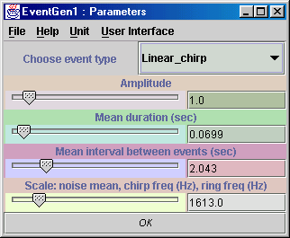

Algorithms Index
EventGen
Author : Bernard Schutz
Input Types : SampleSet
Output Types : SampleSet
Date : 25 June 2000
Contents
Description of EventGen
EventGen acts like Gaussian or RandNoise
to add noise to a data stream, but this noise is non-Gaussian. It is added
in the form of "events", which are short bursts of a specific form, but
the bursts are generated at random times. The user can use the parameter
window (below) to choose from several kinds of bursts, to set the amplitude,
to control the event durations, to set the mean event spacings, and to
adjust a parameter called "scale" whose effect depends on the type of burst
chosen. See below for a description of the details of the various events
that can be generated.
Using EventGen
In the user interface window, the user can make several choices. In each
case the burst is simply added to the input stream. The effect of the choice
of amplitude and scale depends on the burst type and is listed with the
burst types below. The amplitude of each burst is a random number uniformly
distributed between zero and twice the amplitude chosen by the user in
the interface window. The duration of each burst is a random number uniformly
distributed between zero and twice the mean value that the user chooses.
The events begin at times that are randomly chosen such that the mean interval
between events is the value chosen by the user. The type of burst
may be one of the following:
-
Gaussian noise. The added values are chosen from a normal distribution
with standard deviation given by the (random) amplitude of the particular
event and with a mean given by the scale value set in the user interface
window.
-
Uniform noise. The added values are chosen from a uniform distribution
in the interval (-amplitude + scale, amplitude + scale), for the (random)
amplitude of the particular event and the scale value set in the user interface
window. Thus, the distribution has mean value equal to scale.
-
Linear chirp. The added signal is a sinusoid with a uniformly increasing
frequency. It starts from phase 0 and frequency zero, and it reaches a
frequency equal to scale by the end of the (random) duration of the chirp,
where scale is the value set by the user in the interface window. The sinusoid
is multiplied by the (random) value of the amplitude.
-
Ring. The added signal is a sinusoid of constant frequency lasting the
(random) duration, with the (random) amplitude. The frequency is equal
to the value of scale chosen by the user in the interface window.
